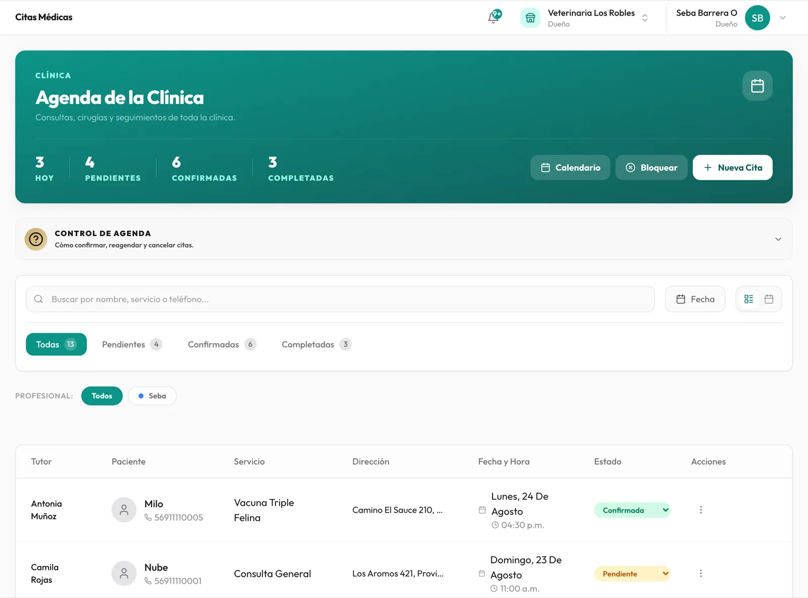
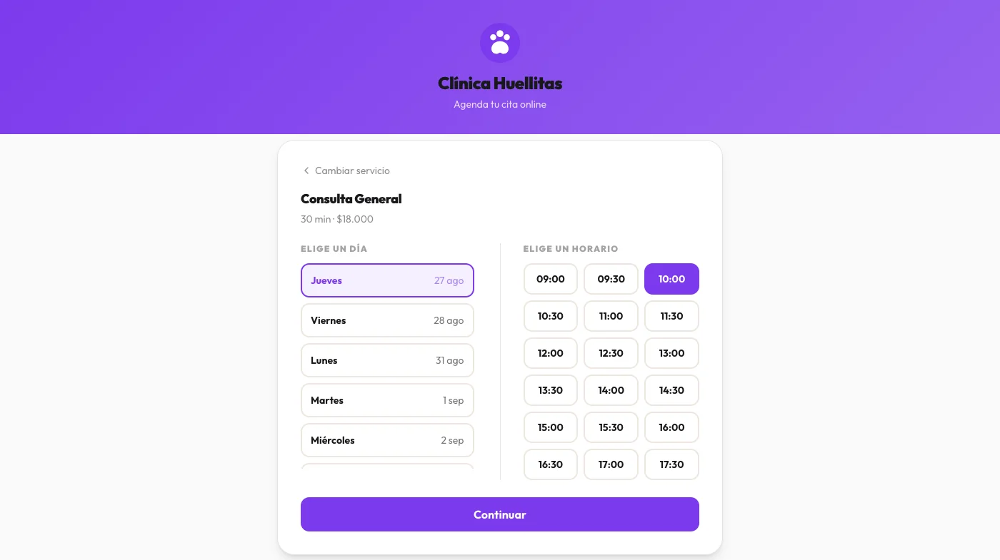
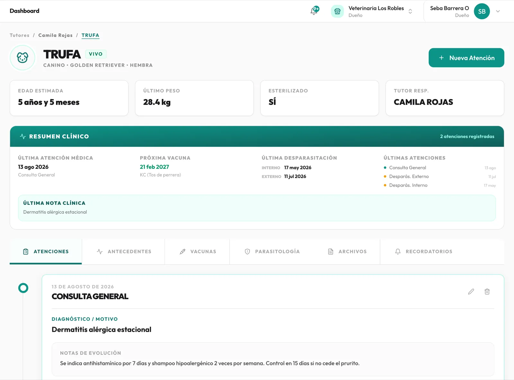
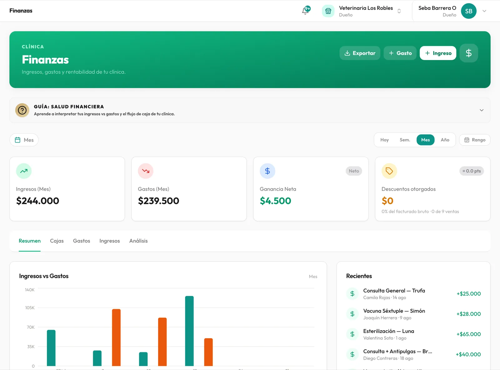
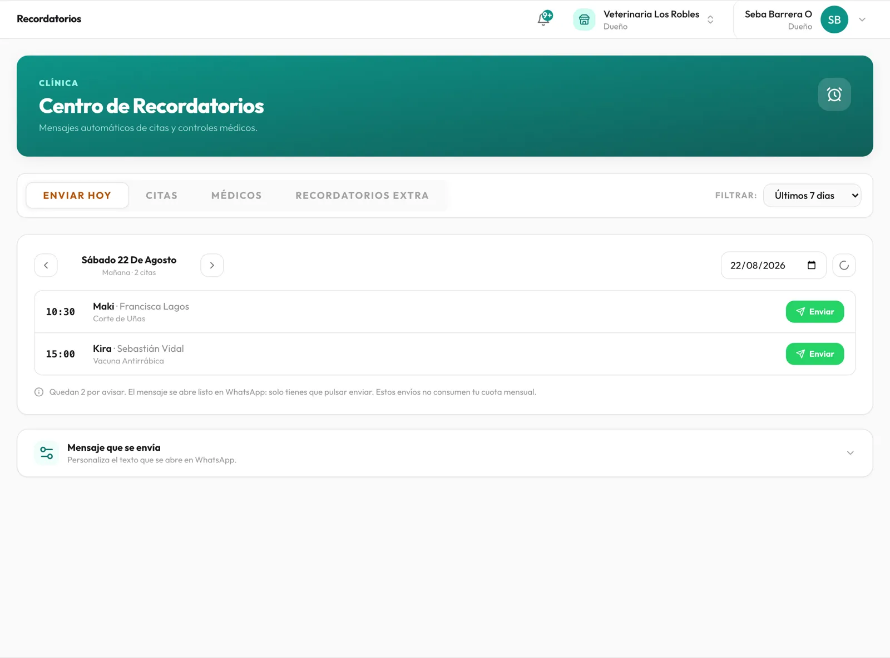
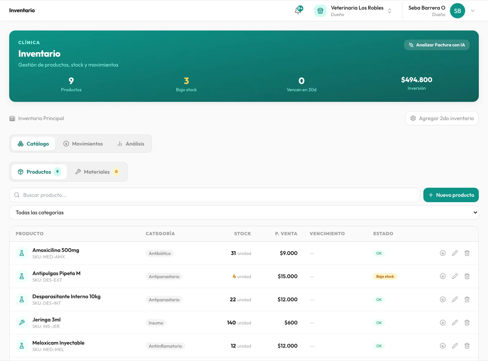
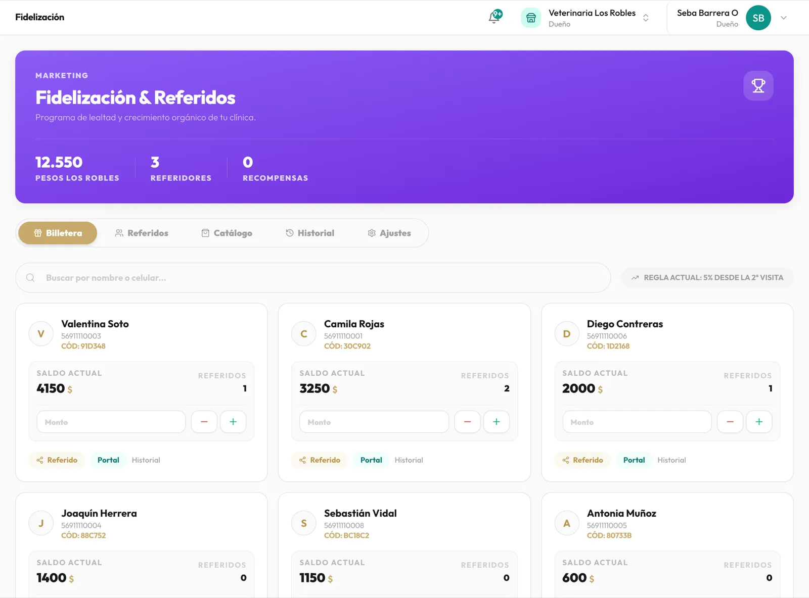
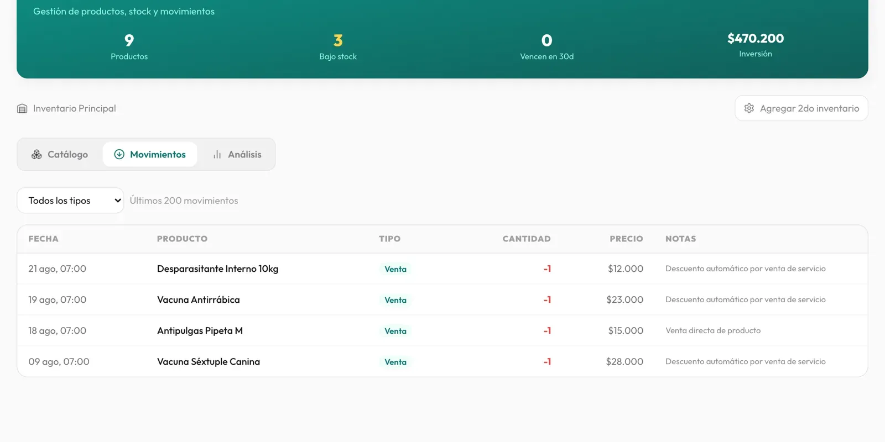

Cuando el historial clínico, el inventario y la caja financiera viven cada uno por su lado, cada decisión del día es a ciegas. Vetly conecta la agenda, la ficha clínica, el inventario y las finanzas — así una vacuna aplicada se descuenta del stock real y entra a la caja sola.
Todo el sistema desbloqueado
Sin tarjeta de crédito.
Sin cobro automático al terminar.
30 días gratis · Sin tarjeta de crédito
Así se ve trabajar a ciegas, en la práctica
La mayoría de las clínicas veterinarias físicas, móviles y profesionales independientes operan igual: trabajan a ciegas todos los días sin notarlo — la información está repartida en varios lugares e imposible de encontrar cuando más la necesitas.
Fichas en papel o Excel
El historial de cada paciente vive en cuadernos o planillas sueltas. En plena consulta atiendes sin saber qué se hizo la última vez, hasta que alguien encuentra el papel.
Sin visibilidad financiera
No hay forma clara de saber cuánto entra y cuánto sale, ni qué queda en stock. Cierras el mes a ciegas, esperando que las cuentas cuadren.
Clientes que no vuelven
Sin recordatorios ni forma de fidelizar, no ves venir qué pacientes dejaron de aparecer — te enteras cuando ya es tarde para traerlos de vuelta.
El producto, de verdad
Capturas reales del plan Core — no ilustraciones. Sin curva de aprendizaje: empiezas a usarlo el mismo día.

Quién viene hoy, con qué mascota, para qué y dónde. Confirmas, reagendas o cancelas desde la misma fila, y el estado de cada cita queda a la vista.

Un link propio, listo para poner en tu bio de Instagram o en tu WhatsApp. El cliente elige el servicio y el horario disponible en tu agenda real, y la cita queda confirmada al instante — sin agente de IA de por medio.
Vacunas, desparasitaciones, consultas y cirugías con sus notas de evolución. Al abrir la ficha ves el resumen clínico completo: última atención, próxima vacuna, peso y desparasitación al día.


Ingresos, gastos y ganancia neta actualizados solos. Cierre de caja diario, comprobantes para tu cliente y exportación cuando la necesites.
Vetly te arma la lista de a quién avisar hoy y abre el mensaje listo en WhatsApp: solo pulsas enviar. Sirve para confirmar la cita del día y también para avisar las vacunas, desparasitaciones y controles médicos que están por vencer.


Stock de medicamentos e insumos con alertas antes de que se agoten, y el descuento automático cuando cierras una venta. Si atiendes a domicilio, puedes llevar un segundo inventario para el móvil.
Extra opcional: carga la factura de tu proveedor y deja que la IA ingrese los productos sola. Se paga aparte con un pack de $3.000 CLP que alcanza para unas 30 facturas y no vence.
Programa de puntos que se acumulan solos con cada visita, un sistema de referidos con código propio para cada tutor, y un carnet digital que cada cliente puede abrir desde su celular. Todo incluido, sin módulos extra.

La diferencia real
En la mayoría de los programas, cada módulo vive por su cuenta: registras la vacuna en la ficha, y después tienes que acordarte de descontarla del stock y de anotar el cobro. Acá pasa una sola vez.
Aplicas la vacuna
La registras una vez en la ficha del paciente, como servicio de la visita.
El stock baja solo
La dosis se descuenta del inventario en el mismo momento, sin que hagas nada más.
El cobro entra a la caja
Queda en finanzas del día y suma puntos de fidelización al tutor.

Cada línea de "descuento automático" salió de una vacuna aplicada en una visita. Nadie la escribió a mano — y nada se te escapa.
Preferimos que lo sepas antes de entrar, no después de pagar.
Incluido en Core
No incluido en Core
— Agente de IA que contesta WhatsApp
Responder y agendar solo, 24/7. Disponible desde el plan Starter.
— Optimización de ruta para clínica móvil
Ordena las visitas del día por cercanía. Desde el plan Starter.
— Campañas masivas segmentadas
Extra opcional, se paga por uso en cualquier plan.
— Boleta o factura electrónica (SII)
Core registra el cobro y envía comprobante por WhatsApp; la emisión tributaria sigue en tu sistema actual.
Puedes subir de plan cuando quieras, sin perder ni un dato.
Sin tarjeta de crédito · Listo en 2 minutos
Casos de éxito
"Trabajo solo y andaba con un cuaderno en la camioneta. Ahora abro la ficha en la casa del paciente y veo la última vacuna sin llamar a nadie. Lo que más me cambió fue mandar los recordatorios: antes se me pasaban las desparasitaciones y perdía esas visitas."
+9
visitas de control al mes
0
vacunas vencidas sin avisar
Dr. Matías Ríos
Veterinario a domicilio · Valdivia 🇨🇱
"Lo que nos ordenó fue la parte financiera. Antes cerrábamos el mes con una planilla que nunca cuadraba con la caja. Ahora el cobro queda registrado en la visita y el stock se descuenta solo — dejamos de comprar vacunas que ya teníamos guardadas."
−18%
en compras de insumos
4 h
menos de cierre de mes
Dra. Paulina Ceballos
Clínica Veterinaria · Concepción 🇨🇱
"Somos tres en el móvil y antes cada uno anotaba en su teléfono. Con la agenda compartida sabemos quién atiende qué sin llamarnos. El programa de puntos también nos sorprendió: hay tutores que volvieron solo por juntar el saldo."
3
veterinarios en una agenda
+24%
de pacientes que reagendan
Dra. Javiera Núñez
Clínica móvil · Santiago 🇨🇱
Por qué existe Vetly
Sebastián Barrera fundó Movilvets, una clínica veterinaria móvil a domicilio en Chile. Vivió el cuaderno en la guantera, las cuentas del mes en una planilla que nunca cuadraba y los pacientes que no volvían porque nadie les avisó.
Probó varios de los sistemas que había, pero eran muy básicos en funcionamiento y se quedaban cortos justo en lo esencial: módulos que no se hablaban entre sí y, con suerte, recordatorios por correo cuando sus clientes vivían en WhatsApp. Construyó Vetly porque necesitaba esa herramienta y no existía.
Fundador · ex-dueño de clínica veterinaria móvil
Sin costo de implementación, sin cobro por usuario extra, sin permanencia.
Plan Core — Lanzamiento
cobro mensual · sin permanencia
En Chile: $17.000 CLP/mes (antes $33.000)
Primero, 30 días gratis
Sin tarjeta de crédito. Al terminar eliges si sigues — no hay cobro automático.
Listo en 2 minutos · Cancela con un clic desde Configuración
¿Necesitas que un agente de IA conteste tu WhatsApp y agende solo? Eso vive en el plan Starter — puedes subir en cualquier momento sin perder tus datos.
No. Creas tu cuenta y usas el sistema completo durante 30 días sin ingresar ningún dato de pago. Al terminar, tú decides si sigues: no hay cobro automático.
Todavía no. Core registra cada cobro, lleva tu caja diaria y envía un comprobante por WhatsApp al tutor, pero la emisión tributaria (SII) se mantiene en el sistema que uses hoy. Preferimos decírtelo antes de que pagues.
Es justo para quien pensamos esto. Funciona desde el celular, puedes llevar un inventario aparte para el móvil, y al registrarte hay una opción para veterinarios independientes: no necesitas tener una clínica con nombre para usarlo.
Sí. Si tienes tus datos en Excel o en otro sistema, el equipo de Vetly te ayuda a migrarlos sin costo. La implementación está incluida en el plan.
Eliges un plan o tu cuenta queda en pausa. Como nunca ingresaste una tarjeta, no hay ningún cobro sorpresa. Tus datos quedan guardados por si vuelves.
Hasta 3 usuarios, sin costo adicional por cada uno. Cada persona entra con su cuenta y puedes definir qué secciones ve.
30 días para probarlo todo con tus pacientes reales. Sin tarjeta y sin compromiso.
Crear mi cuenta gratis →Después, US$17/mes ($17.000 CLP en Chile) · Cancela cuando quieras